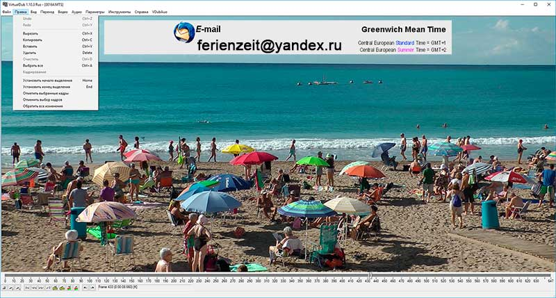

Sie haben ein selbstgedrehtes Video und sind damit nicht zufrieden?
Wir schneiden und bearbeiten Ihr Video nach Ihren Vorstellungen und Wünschen damit es zu einem spannenden und unvergesslichem Film (Andenken) wird.
Vom fertigen Film erhalten Sie von uns sowohl eine DVD & Blu-ray Disc & MP4, wie auch eine entsprechende Datei für Ihren PC.
Obwohl man im Urlaub, bei Familienfeiern und anderen Anlässen schöne Filmaufnahmen gemacht hat - durch die vielen Probleme verliert man die Lust und das schöne Rohmaterial verschwindet in der Schublade. Das ist sehr schade, denn nur ein fertig geschnittener Film mit Filmtitel, Ein- und Überblendungen, Kommentaren und passender Musik begeistert die Zuschauer.
Sind Sie auch Hobbyfilmer? Videoschnitt als Hobby? So erreichen Sie mich! Ich werde über Ihre Antwort froh sein. Alle Themen rund um das Filmen und dem Filmschnitt. Full HD. 1920 x 1080. Blu-ray Disc (H.264 / MPEG-4 AVC) oder MP4. DVD - MPEG-2 720x576.
Raum München
Videofilmer filmt Feiern aller Art in Top Qualität oder Ihr Filmmaterial wird vorzeigegerecht aufgearbeitet.